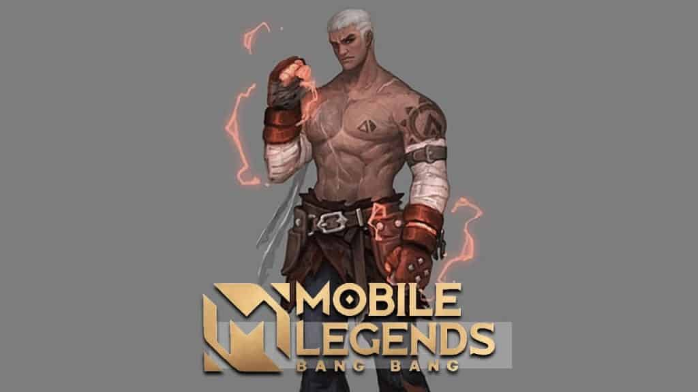
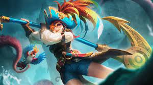

HERO META MLBB S23
Mobile Legends akan melakukan reset Season 22 menjadi Season 23. Pastinya akan terdapat banyak sekali update yang akan menunggu para pecinta game ini, Agar kamu tidak ketinggalan Hero yang akan META pada Season 22 Mobile Legends, maka kami mencoba untuk melakukan sedikit prediksi terkait hal tersebut.
Tanpa basa basi lagi, berikut prediksi 5 Hero yang akan META di Mobile Legends Season 23.
1.Paquito
Paquito merupakan hero Fighter dengan gaya bermain yang ofensif karena semua skill-nya digunakan untuk menghasilkan damage yang besar. Hanya saja memang ada beberapa skill yang memberikan efek tambahan seperti Heavy Left Punch (1) yang bakal memberikan shield, serta Knockout Strike (U) yang bakal memberikan efek slow atau airborne..
Jika Champ Stance (P) milik Paquito sudah terisi penuh, maka semua skill-nya akan semakin diperkuat dan bakal mendapatkan efek baru. Jadi, Paquito ini merupakan hero yang berfokus pada serangan, dan sangat mengandalkan Champ Stance-nya untuk memberikan efek maksimal kepada musuh.
Dengan skill yang berfokus pada damage, maka Paquito hanya bisa dijadikan sebagai role Fighter saja, dan ia tidak bakal cocok untuk menjadi Tank dengan item defense.
2.Ruby
Ruby akan bergerak ke arah EXP Lane. Pasalnya Ruby tidak terlalu membutuhkan Item yang berarti di awal game.
Dia hanya harus membeli Ha’as Claw untuk dapat bertahan di Lane-nya
Kita ketahui bahwa Ha’as Claw hanya membutuhkan 1500 Gold, dimana gold sebanyak itu dapat kita kumpulkan dengan sangat cepat.
Ruby akan bergerak beriringan dengan Hero Jungler tim kita untuk melindunginya dikarenakan dia memiliki skill Crowd Control yang banyak!
Hero META di atas akan sangat sulit dibunuh dengan kemampuan Healing dan Spell Vamp (mengembalikan HP ketika menggunakan skill” yang sangat tinggi
3.Yi Sun-shin (YSS)
Yi Sun-shin hero marksman meta terbaik di Mobile Legends adalah Yi Sun Sin, hero marksman hybrid assassin ini sudah beberapa kali mendapatkan deretan meta. Dengan kemampuan mobilitas serta damage yang tinggi, Yi Sun Sin bisa menjadi hero meta terbaik kalian.
Kemampuan terbaik Yi Sun Sin terletak pada ultimate-nya. Dengan serangan tersebut, akan menyerang semua lawan dan memberikan lokasi lawan pada tim, sehingga semua tim bisa melakukan strategi setelah mengetahui lokasi lawannya.
4.Beatrix

Beatrix merupakan hero marksman yang meta pada season 22 yang mana hero satu ini mendapatkan buff yang signifikan pada awal season ini. Beatrix memiliki kemampuan untuk mengganti senjata yang digunakan untuk menghasilkan damage tinggi.
Serangan ini mampu membuat lawan terkena damage yang besar, Beatrix sangat cocok digunakan untuk teamfight yang mana bisa menghasilkan serangan yang kuat dan mematikan, hero ini patut untuk kalian mainkan di Season 23.
Beatrix bisa menjadi pilihan terbaik bagi kalian yang ingin bermain ranked di awal permainan, kemampuan Beatrix akan sangat menunjang kemenangan yang bisa kalian raih.
5.Karina
Karina merupakan hero assassin magic yang baru saja mendapatkan revamp. Hero ini lepas dari adanya banned dalam draft pick di Season ini, namun jangan salah Karina bisa menjadi jungler yang kuat dan mematikan.
Adanya revamp terbaru membuat Karina semakin banyak diminati, hero ini memiliki kemampuan immune yang sangat baik dan bisa dengan mudah untuk melancarkan serangan yang cepat dan mematikan.
Skill 1 Karina bisa memberikannya immune dari serangan lawan, skill 2 akan membantu memberikan damage, dan ultimate yang bisa memberikan serangan yang cepat tanpa CD skill.